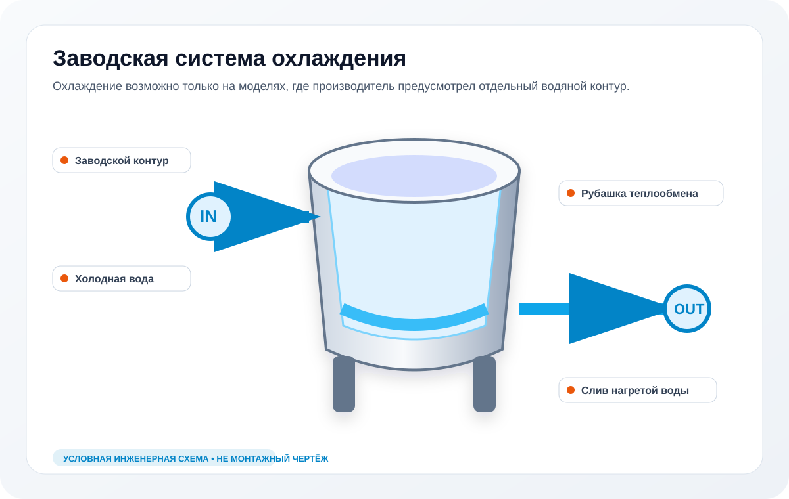

Продукт не остывает
Температура почти не снижается после запуска штатной функции.
Если модель предусматривает охлаждение продукта через рубашку, проверяем подачу холодной воды, клапаны, фильтры, слив, управление и фактический теплообмен. Для обычного котла отсутствие такой функции не является неисправностью.
Визуальная схема узла
Охлаждение рассматривается только у моделей с предусмотренным заводом водяным контуром.

Изображение условное: оно объясняет состав системы, но не заменяет электрическую схему, руководство конкретной модели и измерения на оборудовании.
Температура почти не снижается после запуска штатной функции.
Не слышно работы клапана, отсутствует расход или появляется сообщение системы.
Клапан не закрывается, растёт расход или охлаждение не прекращается по команде.
Охлаждение через рубашку является заводской опцией отдельных моделей. Нельзя подключать водопровод к случайному штуцеру, переделывать рубашку или открывать горячий контур под давлением. Сначала сверяется шильдик, руководство и фактическая комплектация.
Уточним, предусмотрено ли охлаждение заводом, и подготовим проверку водяного контура.
Нет. Это функция или заводская опция отдельных моделей. Сначала проверяется документация и комплектация.
Нет. Ошибочное подключение к рубашке или защитной арматуре опасно. Подключение выполняется по схеме конкретной модели.